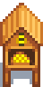
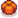

Bee House
| Bee House | |
 |
|
| Place outside and wait for delicious honey! (Except in Winter). | |
| Information | |
| Source | Crafting |
| Season | Spring • Summer • Fall |
| Sell Price | Cannot be sold |
| Crafting | |
| Recipe Source | |
| Ingredients | |
The Bee House is a type of Artisan Equipment used to make Honey. A Bee House is the reward for completing the 
To make honey, place a Bee House on the farm during any season but winter, and wait 4 nights. Bee houses can be placed indoors (e.g., in the Greenhouse) but will not produce honey there, regardless of any flowers within range. Bee houses placed outside the farm will produce wild honey every 4 days, but they will be destroyed if they are placed in a villager's path.
A fully-grown and unharvested flower within 5 tiles of a Bee House (including those grown in Garden Pots) will cause it to produce flower honey, which always sells for more than flowerless Wild Honey. Flowers that are normally foraged (i.e., Crocus and Sweet Pea) do not affect the honey. Additionally, a Dandelion or Daffodil will not affect the honey as these items are classified as forage rather than flowers.
The type of honey is established the moment it is harvested. If a Bee House has produced flower honey, but the flower is harvested before the honey, the honey will become wild honey. Similarly, if a Bee House has produced flowerless wild honey, but the honey is harvested after a flower bloomed in range, the harvested honey will be flower honey.
Products
| Image | Name | Description | Energy/Health | Processing Time[1] | Availability | Base Sell Price | |
|---|---|---|---|---|---|---|---|
| Honey | It's a sweet syrup produced by bees. | Inedible | All but Winter | Wild | |||
Range

With the exception of Crocus and Sweet Pea, the Bee House can produce unique types of honey when it is within 5 tiles in any cardinal direction of a blooming flower (for a total area of 60, excluding the tile the Bee House is placed on). When there is more than one type of flower within range, the closest flower takes priority. At equal distances, the flower at the horizontal left takes priority, followed by the next clockwise flower.
Tips
- Planting flowers near Bee Houses on Ginger Island will produce flavored Honey year-round.
- Garden Pots can be used in parts of the farm and Ginger Island farm where flowers can't be planted.
- Filling all inventory slots but 1 will allow collecting honey without collecting any adjacent flowers.
- Planting a Sunflower on Summer 20 will make sure flower honey can be harvested in early Fall
References
- ↑ See Object::performDropDownAction, Object::DayUpdate, and Object::minutesElapsed in the game code. Bee House parentSheetIndex is 10, as specified in Content\Data\BigCraftablesInformation.xnb.
History
- 1.4: Added honey from Sunflowers. Fixed lopsided flower range. Bee Houses can now be stacked in a player's inventory and in chests.
- 1.5: Fixed bug where processing time was affected by the time of day.
- 1.5.2: Fixed bug where Honey could not be collected from Beehouses on Ginger Island farm in Winter.
- 1.6: Removing a Bee House with honey ready for harvesting no longer drops the honey as "Wild Honey". Can now be obtained as a prize from the Prize Machine.
- 1.6: Fixed bug where placing a Bee House on exactly Winter 28 will produce honey on Spring 4. A Bee house will now first produce honey on Spring 5
- 1.6.6: Now produces flower honey with flowers in garden pots.